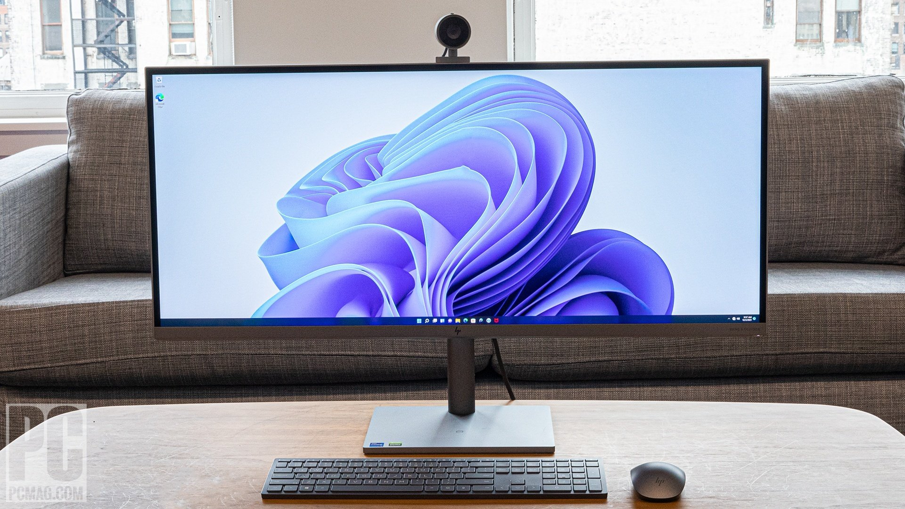

A computer is a digital electronic machine that can be programmed to carry out sequences of arithmetic or logical operations (computation) automatically. Modern computers can perform generic sets of operations known as programs. These programs enable computers to perform a wide range of tasks. A computer system is a "complete" computer that includes the hardware, operating system (main software), and peripheral equipment needed and used for "full" operation. This term may also refer to a group of computers that are linked and function together, such as a computer network or computer cluster.
A broad range of industrial and consumer products use computers as control systems. Simple special-purpose devices like microwave ovens and remote controls are included, as are factory devices like industrial robots and computer-aided design, as well as general-purpose devices like personal computers and mobile devices like smartphones. Computers power the Internet, which links billions of other computers and users.
Early computers were meant to be used only for calculations. Simple manual instruments like the abacus have aided people in doing calculations since ancient times. Early in the Industrial Revolution, some mechanical devices were built to automate long tedious tasks, such as guiding patterns for looms. More sophisticated electrical machines did specialized analog calculations in the early 20th century. The first digital electronic calculating machines were developed during World War II. The first semiconductor transistors in the late 1940s were followed by the silicon-based MOSFET (MOS transistor) and monolithic integrated circuit (IC) chip technologies in the late 1950s, leading to the microprocessor and the microcomputer revolution in the 1970s. The speed, power and versatility of computers have been increasing dramatically ever since then, with transistor counts increasing at a rapid pace (as predicted by Moore's law), leading to the Digital Revolution during the late 20th to early 21st centuries.
Conventionally, a modern computer consists of at least one processing element, typically a central processing unit (CPU) in the form of a microprocessor, along with some type of computer memory, typically semiconductor memory chips. The processing element carries out arithmetic and logical operations, and a sequencing and control unit can change the order of operations in response to stored information. Peripheral devices include input devices (keyboards, mice, joystick, etc.), output devices (monitor screens, printers, etc.), and input/output devices that perform both functions (e.g., the 2000s-era touchscreen). Peripheral devices allow information to be retrieved from an external source and they enable the result of operations to be saved and retrieved.

Computer is the most useful and powerful machine which can perform various tasks. The major Characteristics of computer are speed, storage, accuracy, versatility, diligence, automatio, world length, non-intelligent etc.
1. Electronic
2. Speed
3.Storage
4.Accuracy
5.Versatility
Computer has been integral part of our daily life in this morden age. Nothing is absolute everything has its flaws and weeknesses. And, the same applies in computer too. However, its merits weight much hevier than demerits.
Computer can be used in various fields, for example, banks, medicine, education, ticketing, defense, business, multimedia, desktop publishing, communication, government, data processing, weather forecasting, planning and scheduling.
1. Banks
2. Engineering
3. medicine
4. Education
5. Ticketing
6. Defense